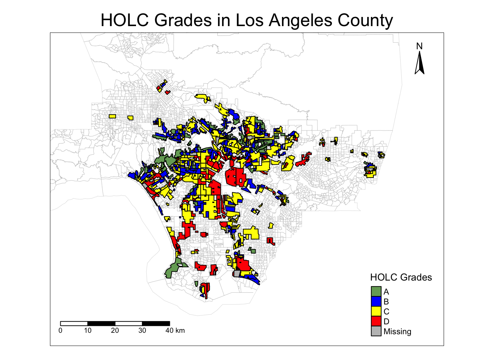
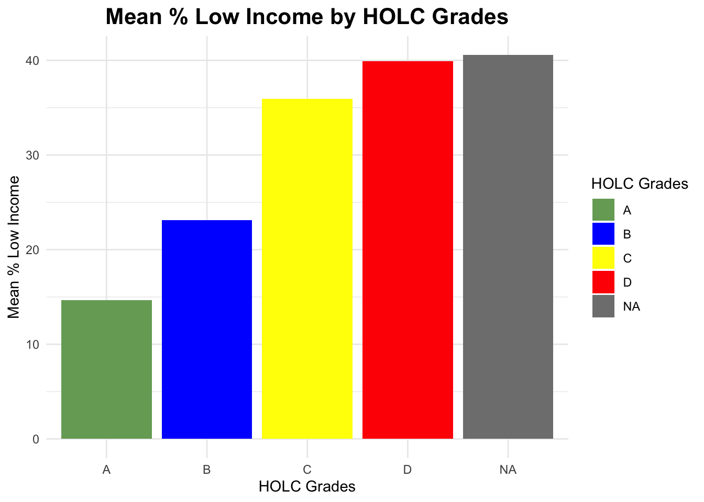
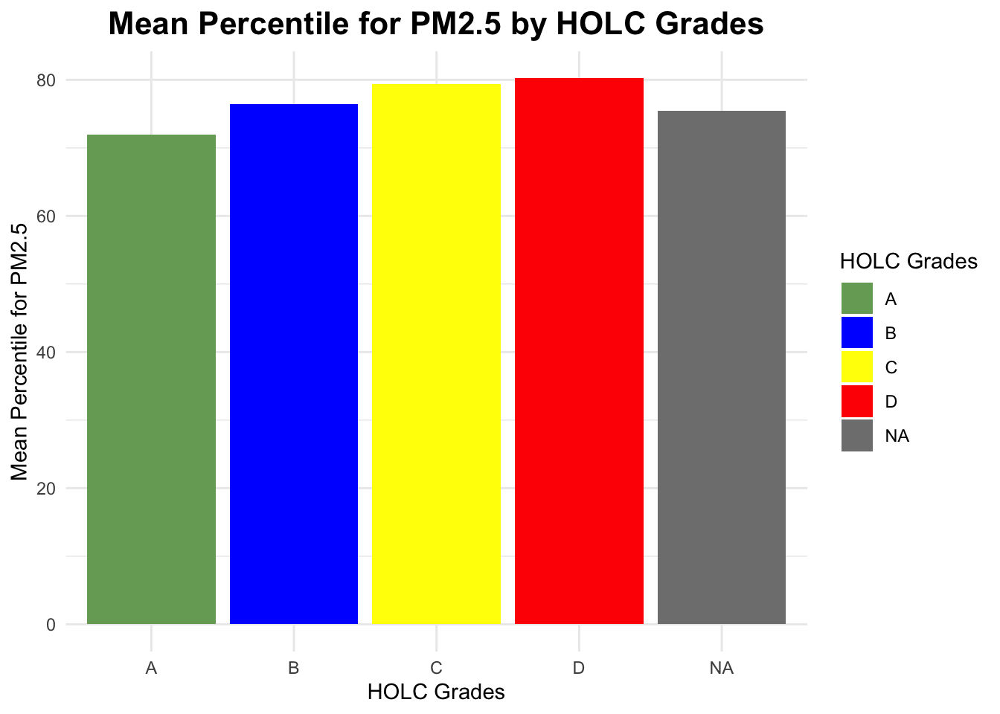
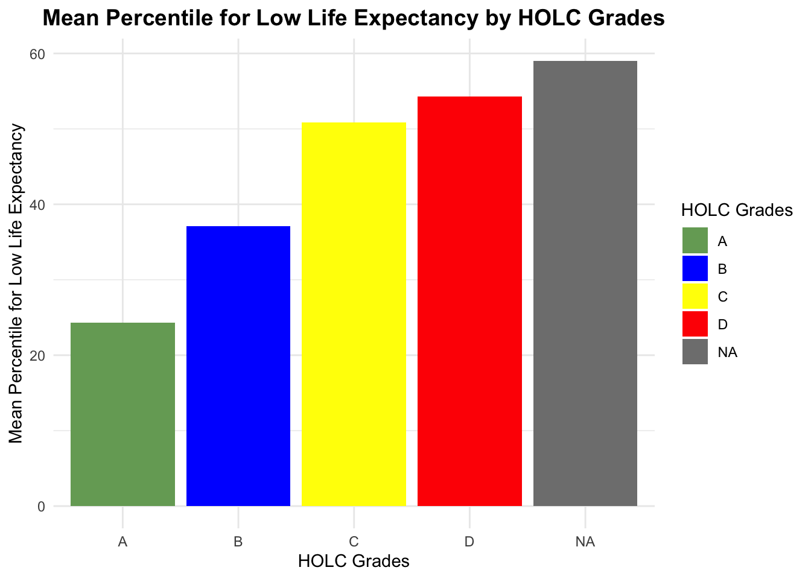
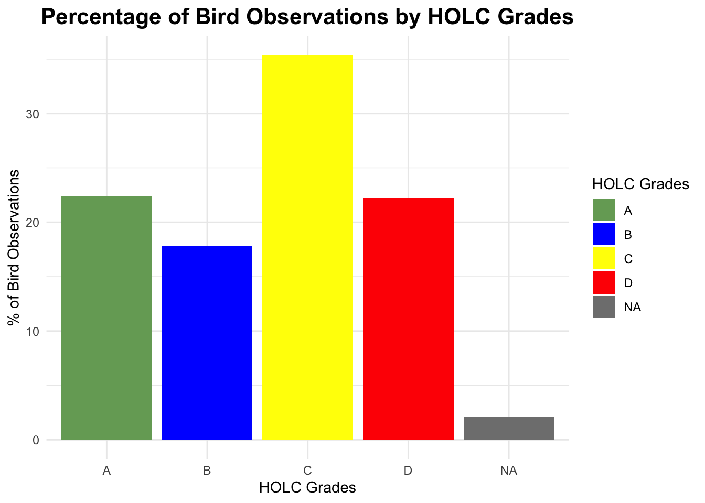

# Load necessary libraries
library(here)
library(jsonlite)
library(sf)
library(tmap)
library(terra)
library(dplyr)
library(kableExtra)
library(ggplot2)Exploring Patterns of Environmental Justice in LA due to HOLC Redlining
Part 1: Legacy of redlining in current environmental (in)justice
Setup: Load Required Libraries
Click to view code
Load and Prepare Environmental Justice Data
Click to view code
# Read EJSCREEN data
ejscreen <- sf::st_read(here::here("data", "ejscreen","EJSCREEN_2023_BG_StatePct_with_AS_CNMI_GU_VI.gdb"))Reading layer `EJSCREEN_StatePctiles_with_AS_CNMI_GU_VI' from data source
`/Users/sp365/Documents/EDS 223/HW/EJ impacts of Redlining/data/ejscreen/EJSCREEN_2023_BG_StatePct_with_AS_CNMI_GU_VI.gdb'
using driver `OpenFileGDB'
Simple feature collection with 243021 features and 223 fields
Geometry type: MULTIPOLYGON
Dimension: XY
Bounding box: xmin: -19951910 ymin: -1617130 xmax: 16259830 ymax: 11554350
Projected CRS: WGS 84 / Pseudo-Mercator# Filter data for California state
CA_ej <- ejscreen %>% dplyr::filter(ST_ABBREV == "CA")
# Further filter for Los Angeles County and select relevant variables
la_ej <- CA_ej %>%
filter(CNTY_NAME == "Los Angeles County") %>%
select(ID, LOWINCPCT, P_PM25, P_LIFEEXPPCT)# Read HOLC redlining data for Los Angeles
la_holc <- sf::st_read(here::here("data", "mapping-inequality", "mapping-inequality-los-angeles.json"))Reading layer `mapping-inequality-los-angeles' from data source
`/Users/sp365/Documents/EDS 223/HW/EJ impacts of Redlining/data/mapping-inequality/mapping-inequality-los-angeles.json'
using driver `GeoJSON'
Simple feature collection with 417 features and 14 fields
Geometry type: MULTIPOLYGON
Dimension: XY
Bounding box: xmin: -118.6104 ymin: 33.70563 xmax: -117.7028 ymax: 34.30388
Geodetic CRS: WGS 84# Check and print CRS compatibility of EJScreen and HOLC data
if (st_crs(la_ej)==st_crs(la_holc)) {
print("Same Coordinate System")
} else {
print("Different Coordinate System")
}[1] "Different Coordinate System"# Transform CRS of HOLC data to match EJScreen data
la_holc <- st_transform(la_holc, crs = st_crs(la_ej))Visualize HOLC Redlining Grades
# Select boundary shape for Los Angeles for base map
los_angeles_boundary <- la_ej %>%
select(Shape)# Define bounding box based on HOLC data
bbox_holc <- st_bbox(la_holc)# Define colors for grades
grade_colors <- c("A" = "#76a865", "B" = "blue", "C" = "yellow", "D" = "red")
tmap_mode("plot")
#tmap_options(check.and.fix = TRUE)
# Create the map
tm_shape(los_angeles_boundary, bbox = bbox_holc) +
tm_borders(col = "gray", lwd = 0.5, alpha = 0.5) +
tm_shape(la_holc) +
tm_polygons("grade",
palette = grade_colors,
title = "HOLC Grades",
border.col = "black") +
tm_layout(main.title = "HOLC Grades in Los Angeles County",
main.title.position = c("center", "top"),
main.title.size = 1.5,
legend.position = c("right", "bottom"),
legend.outside = FALSE,
legend.title.size = 1,
legend.text.size = 0.7,
frame = TRUE,
inner.margins = c(0.15, 0.15, 0.15, 0.15)) +
tm_scale_bar(position = c("left", "bottom"), text.size = 0.6) +
tm_compass(position = c("right", "top")) 
Analyse the % of Census Block within each HOLC Grade
# Perform spatial intersection between LA EJScreen and HOLC data
ej_holc_intersection <- st_intersection(la_ej, la_holc)# Identify duplicated IDs
duplicated_ids <- ej_holc_intersection$ID[duplicated(ej_holc_intersection$ID)]
# Count the number of unique duplicated IDs
num_duplicated_ids <- length(unique(duplicated_ids))
# Create a message
if (num_duplicated_ids > 0) {
message(paste(num_duplicated_ids, "duplicated IDs found."))
} else {
message("No duplicated IDs found.")
}To ensure each census block is uniquely associated with a single HOLC grade, we retain the polygon with the largest area when duplicates exist.
# Calculate area of each intersected polygon
ej_holc_intersection$area <- st_area(ej_holc_intersection)
# For each ID, retain the polygon with the largest area
ej_holc_no_duplicates <- ej_holc_intersection %>%
group_by(ID) %>%
slice_max(order_by = area, with_ties = FALSE) %>%
ungroup()# Group by HOLC grade and summarize counts and percentages
census_block_by_grade <- ej_holc_no_duplicates %>%
group_by(grade) %>%
summarize(count = n()) %>%
mutate(perc_obs = count / sum(count) * 100)# Convert spatial dataframe to regular dataframe
census_block_by_grade_df <- st_drop_geometry(census_block_by_grade)
# Create and style the table
census_block_by_grade_df %>%
kable("html", col.names = c("HOLC Grade", "No. of Census Blocks", "Percentage of Census Blocks"), digits = 2) %>%
kable_styling(bootstrap_options = c("striped", "hover", "condensed"), full_width = FALSE)| HOLC Grade | No. of Census Blocks | Percentage of Census Blocks |
|---|---|---|
| A | 261 | 6.54 |
| B | 664 | 16.64 |
| C | 2029 | 50.84 |
| D | 938 | 23.50 |
| NA | 99 | 2.48 |
Analyze Environmental Justice Indicators by HOLC Grade
# Group by HOLC grade and calculate mean indicators
holc_summary <- ej_holc_no_duplicates %>%
group_by(grade) %>%
summarize(
mean_lowincpct = mean(LOWINCPCT, na.rm = TRUE),
mean_p_pm25 = mean(P_PM25, na.rm = TRUE),
mean_p_lifeexppct = mean(P_LIFEEXPPCT, na.rm = TRUE)
)# Convert spatial dataframe to regular dataframe
holc_summary_df <- st_drop_geometry(holc_summary)
holc_summary_df$mean_lowincpct <- holc_summary_df$mean_lowincpct * 100
# Create and style the table
holc_summary_df %>%
kable("html", col.names = c("HOLC Grade", "Mean % low income", "Mean Percentile for PM2.5", "Mean Percentile for Low Life Expectancy"), digits = 2) %>%
kable_styling(bootstrap_options = c("striped", "hover", "condensed"), full_width = FALSE)| HOLC Grade | Mean % low income | Mean Percentile for PM2.5 | Mean Percentile for Low Life Expectancy |
|---|---|---|---|
| A | 14.66 | 71.99 | 24.32 |
| B | 23.12 | 76.40 | 37.14 |
| C | 35.93 | 79.35 | 50.88 |
| D | 39.90 | 80.20 | 54.31 |
| NA | 40.55 | 75.40 | 59.03 |
# Bar plot for Mean % low income by HOLC Grade
ggplot(holc_summary_df, aes(x = grade, y = mean_lowincpct, fill = grade)) +
geom_bar(stat = "identity") +
scale_fill_manual(values = grade_colors)+
labs(title = "Mean % Low Income by HOLC Grades", y = "Mean % Low Income", x = "HOLC Grades", fill = "HOLC Grades") +
theme_minimal()+
theme(
plot.title = element_text(size = 16, hjust = 0.5, face = "bold") # Increase size, center, and bold
)
# Bar plot for Mean Percentile for PM2.5 by HOLC Grade
ggplot(holc_summary_df, aes(x = grade, y = mean_p_pm25, fill = grade)) +
geom_bar(stat = "identity") +
scale_fill_manual(values = grade_colors)+
labs(title = "Mean Percentile for PM2.5 by HOLC Grades", y = "Mean Percentile for PM2.5", x = "HOLC Grades", fill = "HOLC Grades") +
theme_minimal()+
theme(
plot.title = element_text(size = 16, hjust = 0.5, face = "bold") # Increase size, center, and bold
)
# Bar plot for Mean Percentile for Low Life Expectancy by HOLC Grade
ggplot(holc_summary_df, aes(x = grade, y = mean_p_lifeexppct, fill = grade)) +
geom_bar(stat = "identity") +
scale_fill_manual(values = grade_colors)+
labs(title = "Mean Percentile for Low Life Expectancy by HOLC Grades", y = "Mean Percentile for Low Life Expectancy", x = "HOLC Grades", fill = "HOLC Grades") +
theme_minimal()+
theme(
plot.title = element_text(size = 14, hjust = 0.5, face = "bold") # Increase size, center, and bold
)
The table clearly highlights disparities in environmental justice (EJ) indicators across the HOLC grades. Neighborhoods graded “A” (the most desirable) have the lowest mean percentage of low-income residents (15%) and comparatively better health outcomes, as indicated by a lower mean percentile for PM2.5 exposure (71.99) and low life expectancy (24.32). In contrast, “D” graded neighborhoods exhibit the highest percentage of low-income residents (40%) and the poorest health outcomes, with a higher mean percentile of PM2.5 exposure(80.20) and low life expectancy (54.31). These patterns underscore how historical policies have perpetuated environmental and health inequalities, with marginalized communities still bearing the brunt of pollution and lower life expectancy.
Part 2: Legacy of redlining in biodiversity observations
Load and Prepare Biodiversity Data
Click to view code
# Read bird observations shapefile
bird <- sf::st_read(here::here("data", "gbif-birds-LA", "gbif-birds-LA.shp"))Reading layer `gbif-birds-LA' from data source
`/Users/sp365/Documents/EDS 223/HW/EJ impacts of Redlining/data/gbif-birds-LA/gbif-birds-LA.shp'
using driver `ESRI Shapefile'
Simple feature collection with 1288865 features and 1 field
Geometry type: POINT
Dimension: XY
Bounding box: xmin: -118.6099 ymin: 33.70563 xmax: -117.7028 ymax: 34.30385
Geodetic CRS: WGS 84# Check CRS compatibility between HOLC and bird data
if (st_crs(la_holc)==st_crs(bird)) {
print("Same Coordinate System")
} else {
print("Different Coordinate System")
}[1] "Different Coordinate System"# Transform bird data CRS to match HOLC if different
bird <- st_transform(bird, crs = st_crs(la_holc))Analyze the Bird Observation with HOLC Grades
# Perform spatial intersection between bird and holc data
bird_holc <- st_intersection(bird, la_holc)# Group by HOLC grade and summarize bird observation counts and percentages
bird_obs <- bird_holc %>%
group_by(grade) %>%
summarize(count = n()) %>%
mutate(perc_obs = count / sum(count) * 100)# Convert spatial dataframe to regular dataframe
bird_obs_df <- st_drop_geometry(bird_obs)
# Create and style the table
bird_obs_df %>%
kable("html", col.names = c("HOLC Grade", "No. of Bird Observations", "% of Bird Observations"), digits = 2) %>%
kable_styling(bootstrap_options = c("striped", "hover", "condensed"), full_width = FALSE)| HOLC Grade | No. of Bird Observations | % of Bird Observations |
|---|---|---|
| A | 30345 | 22.37 |
| B | 24198 | 17.84 |
| C | 47973 | 35.36 |
| D | 30246 | 22.29 |
| NA | 2904 | 2.14 |
# Bar plot for Percentage of Bird Observations by HOLC Grade
ggplot(bird_obs_df, aes(x = grade, y = perc_obs, fill = grade)) +
geom_bar(stat = "identity") +
scale_fill_manual(values = grade_colors)+
labs(title = "Percentage of Bird Observations by HOLC Grades", y = "% of Bird Observations", x = "HOLC Grades", fill = "HOLC Grades") +
theme_minimal()+
theme(
plot.title = element_text(size = 16, hjust = 0.5, face = "bold") # Increase size, center, and bold
)
From the figure, we cannot clearly see the relationship between HOLC grades and bird observations. 22.29 % of bird observations is found in D graded area, which is similar to A graded area (22.37 %) and higher than the B graded area (17.84%)